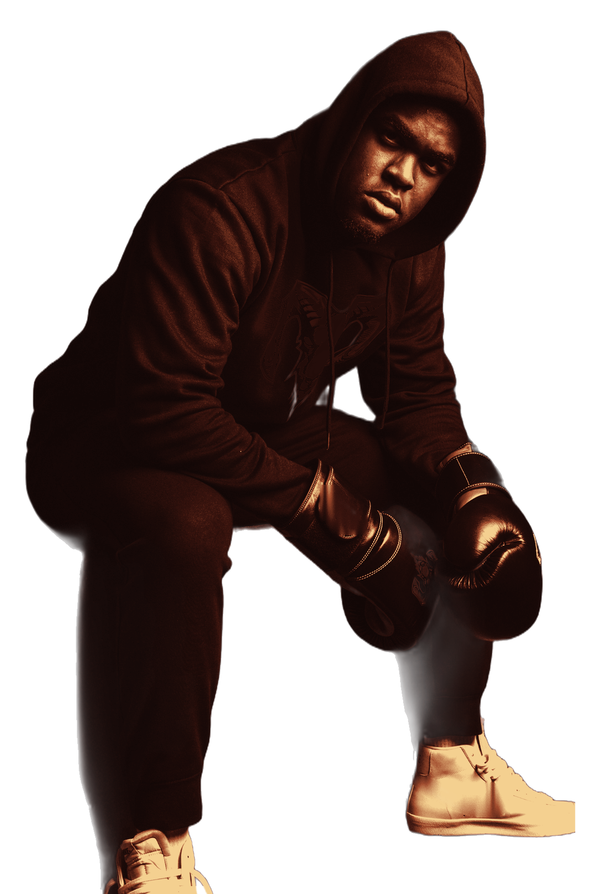

A fight night in twelve rounds
Twelve rounds, one ring, no undercard worth mentioning. The bell goes at nine and one of the two walks home early. Cash only. Leave your opinions at the door: the referee has heard them all.